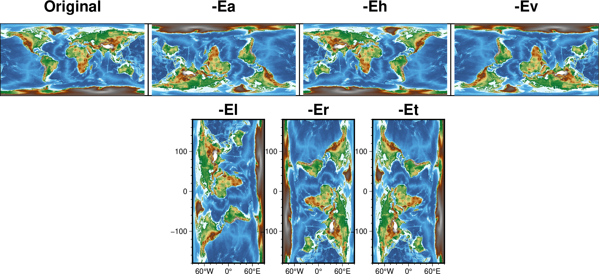

grdedit
- 官方文档
- 简介
修改网格文件的头段或内容
grdedit 模块具有如下功能：
从2D网格文件中读入头段信息，并使用命令行中的值替换头段信息
对全球地理网格文件沿着东西方向旋转
可以用 x y z 值替换网格文件中特定节点的值
语法
gmt grdedit grid [ -A ] [ -C ] [ -D[+xxname][+yyname][+zzname][+sscale][+ooffset][+ninvalid][+ttitle][+rremark] ] [ -E[a|h|l|r|t|v] ] [ -Goutgrid ] [ -Jparameters ] [ -L[+n|p] ] [ -Ntable ] [ -Rregion ] [ -S ] [ -T ] [ -V[level] ] [ -bibinary ] [ -dinodata ] [ -eregexp ] [ -fflags ] [ -hheaders ] [ -iflags ] [ -:[i|o] ] [ --PAR=value ]
必须选项
- grid
要修改的2D网格文件
可选选项
- -A
如有必要，则对网格间隔做微调使得其与数据的范围相兼容。仅用于处理 GMT 3.1 之前版本生成的网格文件。
- -C
清除网格文件头段区中生成该网格所使用的命令历史
- -D[+xxname][+yyname][+zzname][+sscale][+ooffset][+ninvalid][+ttitle][+rremark]
给定网格文件头段中的基本信息：
+xxname X变量名及其单位，格式为 varname [unit]，比如 “distance [km]”
+sscale 读入网格数据后要乘以的因子，默认值为 1
+ooffset 读入数据后并乘以因子后要加的常数，默认值为 0
+ninvalid 指定值 invalid 用于表示该节点处无有效值，默认为NaN
+ttitle 网格文件的标题
+rremark 网格文件的注释信息
其它说明：
未指定的项其值保持不变
可以给一个空值以重置某一项，比如使用 +t 而不指定标题则设置标题为空
若字符串中包含空格则需要用引号括起来
若字符串中包含加号 +，需要使用 + 对其进行转义。或者可以使用单引号套双引号的方式，例如 ‘“title with + inside”’
若字符串中使用了shell变量，且变量值中包含加号，则需要使用
${variable/+/\\+}对于地理数据（比如 -fg ），xname 和 yname 会自动设置
- -E[a|h|l|r|t|v]
对网格做变换。该选项与除 -G 外的其它选项不兼容
-Ea 旋转180度
-Eh 水平翻转网格（从左到右）
-Ev 垂直旋转网格（从上到下）
-El 逆时针将网格旋转90度
-Er 顺时针将网格旋转90度
-Et 对网格进行转置（想象成一个二维矩阵），默认使用该变换
下图展示了不同变换的具体效果：

- -Goutgrid
默认情况下，grdedit 模块会直接修改并覆盖原始网格文件。使用该选项则将修改后的网格写到新的文件中。
- -Jprojection (more …)
设置地图投影方式
使用 -J 选项则将地理相关信息以 CF-1 兼容的元数据形式（可被GDAL识别）保存到 netCDF 文件中。
- -L[+n|p]
调整地理网格文件的经度
默认情况下会调整 west 和 east 使得 west>=-180 或 east <= 180。 +n 则强制经度为负值，+p 则强制经度为正值。
- -Ntable
从文件 table 中读入XYZ数据，并用这些XYZ数据替换网格中对应节点的值。
- -Rxmin/xmax/ymin/ymax[+r][+uunit] (more …)
指定数据范围
修改网格文件的范围。同时，网格间隔会做相应修改。
- -S
将网格沿着经度范围整体偏移，使得其满足 -R 定义的新范围。仅用于全球地理网格数据。
例如，原数据范围是 0/360/-72/72，现将数据整体偏移180度使得数据范围是 -180/180/-72/72:
gmt grdedit world.nc -R-180/180/-72/72 -S
- -T
将一个网格线配准的文件变成像素配准的文件，或反之。
使用该选项后，网格线配准的数据的范围将在四个方向上扩大半个网格间隔，像素点配置的数据的范围将在四个方向上缩小半个网格间隔。
注意：修改网格配准方式会导致高频信息丢失，详情见 网格配准。
- -V[level] (more …)
设置 verbose 等级 [w]
- -bi[ncols][type][w][+l|b] (more …)
设置二进制输入数据的格式
- -dinodata (more …)
将输入数据中值为 nodata 的列替换为 NaN
- -e[~]“pattern” | -e[~]/regexp/[i] (more …)
筛选或剔除匹配指定模式的数据记录
- -f[i|o]colinfo (more …)
指定输入或输出列的数据类型
- -h[i|o][n][+c][+d][+msegheader][+rremark][+ttitle] (more …)
跳过或生成指定数目的头段记录
- -icols[+l][+sscale][+ooffset][,…][,t[word]] (more …)
设置输入数据列及简单变换（0表示第一列，t 表示文本列）
- -^ 或 -
显示简短的帮助信息，包括模块简介和基本语法信息（Windows下只能使用 -）
- -+ 或 +
显示帮助信息，包括模块简介、基本语法以及模块特有选项的说明
- -? 或无参数
显示完整的帮助信息，包括模块简介、基本语法以及所有选项的说明
- --PAR=value
临时修改GMT参数的值，可重复多次使用。参数列表见 gmt.conf
示例
假定数据文件data.nc的范围为300/310/10/30。下面的命令修改了其数据范围并修改了标题:
gmt grdedit data.nc -R-60/-50/10/30 -D+t"Gravity Anomalies"
数据文件 world.nc 的范围为 0/360/-72/72，下面的命令对数据做了移动，使得数据范围为 -180/180/-72/72:
gmt grdedit world.nc -R-180/180/-72/72 -S
GMT 4.1.3 之前的网格文件不包含足够的信息表明某个网格文件是地理网格。为了添加这一信息，可以使用:
gmt grdedit junk.nc -fg
将网格文件 oblique.nc 逆时针旋转90度，并输出到新文件:
gmt grdedit oblique.nc -El -Goblique_rot.nc
为了确保文件 depths.nc 的经度始终为正值:
gmt grdedit depths.nc -L+p